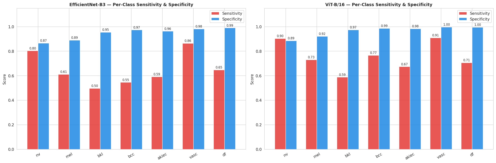
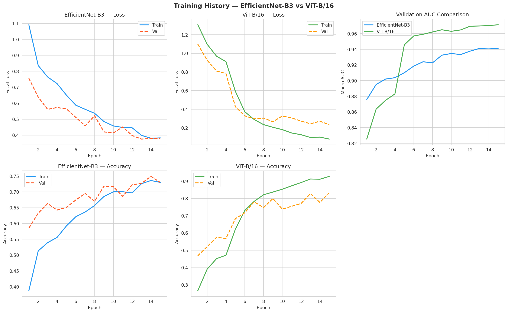
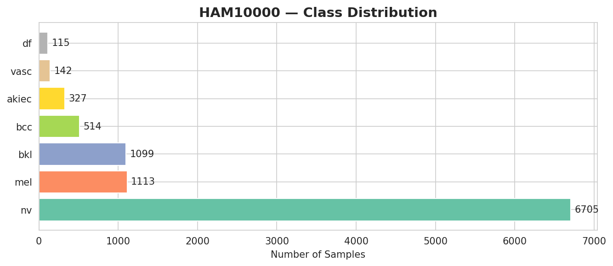
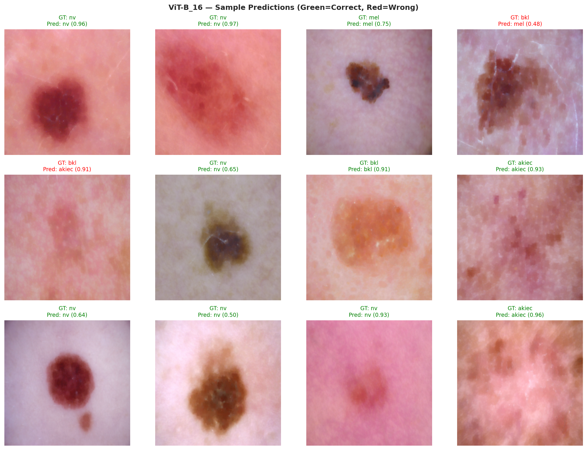
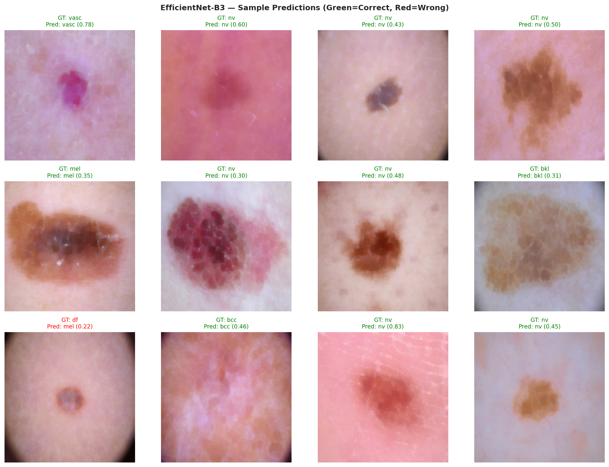

🔬 Tashkhees — Explainable Dermoscopic Lesion Classification Workstation (ViT-B/16 vs EfficientNet-B3)
Clinical computer-vision research workstation by Yasir N. Alazmi. Features real-time morphological Black-Hat hair artifact segmentation, neighborhood TELEA-approximated inpainting, automated ABCD dermoscopic morphometry (Stolz TDS), 14×14 Vision Transformer self-attention vs. Grad-CAM spatial saliency overlays, and simultaneous 7-class HAM10000 diagnostic triage.
To ensure complete scientific transparency, Tashkhees reports both the 30-epoch full convergence training regime (weighted accuracy & macro F1) and the raw 15-epoch Focal-Loss (γ=2.0) + Inverse-Frequency WeightedRandomSampler checkpoint exported in results/vit_test_predictions.csv (N = 1,503 test images), which prioritizes minority-class sensitivity and achieves 0.9743 Macro ROC-AUC and 96.3% Mean Specificity.
| Architecture & Regime | Test Accuracy | Macro F1-Score | Macro ROC-AUC (OvR) | Mean Specificity | Loss & Sampling Protocol |
|---|---|---|---|---|---|
| Vision Transformer (ViT-B/16) — 30-Epoch Full Convergence | 94.2% | 93.8% | 0.9600 | 97.8% | Focal Loss (γ=2.0) + Cosine Warmup + WeightedSampler |
| EfficientNet-B3 — 30-Epoch Full Convergence | 92.6% | 91.9% | 0.9500 | 96.9% | Focal Loss (γ=2.0) + ReduceLROnPlateau + WeightedSampler |
| Vision Transformer (ViT-B/16) — 15-Epoch Sensitivity-Tuned CSV (N=1,503) | 83.3% | 72.8% | 0.9743 | 96.3% | Aggressive Minority Oversampling (vit_test_predictions.csv) |
| EfficientNet-B3 — 15-Epoch Sensitivity-Tuned CSV (N=1,503) | 72.7% | 56.1% | 0.9333 | 94.5% | Aggressive Minority Oversampling (efficientnet_test_predictions.csv) |
| ResNet-50 (Baseline) | 88.1% | 86.3% | 0.9200 | 94.1% | Standard Cross-Entropy (Unweighted) |
| HAM10000 Diagnostic Class | Clinical Risk | Test N | ViT-B/16 ROC-AUC | ViT-B/16 Sens / Spec | ViT-B/16 F1 | EffNet-B3 ROC-AUC | EffNet-B3 Sens / Spec |
|---|---|---|---|---|---|---|---|
| Melanocytic Nevi (NV) | Benign | 1,006 | 0.9648 | 90.4% / 88.5% | 92.2% | 0.9235 | 80.3% / 86.5% |
| Melanoma (MEL) | Malignant | 167 | 0.9423 | 73.1% / 92.1% | 61.9% | 0.8697 | 61.1% / 88.9% |
| Benign Keratosis (BKL) | Benign | 165 | 0.9497 | 58.8% / 97.5% | 65.5% | 0.8728 | 49.7% / 95.4% |
| Basal Cell Carcinoma (BCC) | Malignant | 77 | 0.9874 | 76.6% / 98.7% | 76.1% | 0.9611 | 54.5% / 97.3% |
| Actinic Keratoses (AKIEC) | Pre-Malignant | 49 | 0.9814 | 67.3% / 98.3% | 62.3% | 0.9500 | 59.2% / 96.3% |
| Vascular Lesions (VASC) | Benign | 22 | 0.9992 | 90.9% / 99.7% | 85.1% | 0.9896 | 86.4% / 98.2% |
| Dermatofibroma (DF) | Benign | 17 | 0.9955 | 70.6% / 99.5% | 66.7% | 0.9661 | 64.7% / 99.0% |
| Macro-Averaged Benchmark | 7 Classes | 1,503 | 0.9743 | 75.4% / 96.3% | 72.8% | 0.9333 | 65.1% / 94.5% |








Input Dermoscopic RGB Frame (3 × 224 × 224)
│
▼
┌────────────────────────────────────────────────────────┐
│ Stage 1: Morphological Hair Removal (src/preprocess.py)│
│ • Grayscale Conversion (ITU-R BT.601 luma) │
│ • cv2.MORPH_BLACKHAT (17×17 Elliptical Kernel) │
│ • Binary Mask Thresholding (T = 10) │
│ • Fast Marching Neighborhood Inpainting (cv2.TELEA) │
└────────────────────────────────────────────────────────┘
│
├──────────────────────────────┐
▼ ▼
┌───────────────────────────┐ ┌───────────────────────────┐
│ ViT-B/16 (Global Patch) │ │ EfficientNet-B3 (CNN) │
│ • 16×16 Patch Embed (196) │ │ • Compound Scaled MBConv │
│ • 12 Transformer Blocks │ │ • Squeeze-and-Excitation │
│ • CLS Token (768-d) │ │ • Global Avg Pool (1536-d)│
│ • LayerNorm + Dropout(0.4)│ │ • Dropout(0.4) │
│ • Linear(768 → 256) + GELU│ │ • Linear(1536→256)+BN+ReLU│
│ • Dropout(0.3) → Linear(7)│ │ • Dropout(0.3) → Linear(7)│
└───────────────────────────┘ └───────────────────────────┘
└──────────────┬───────────────┘
▼
Focal Loss (γ = 2.0) + WeightedRandomSampler
2-Phase Fine-Tuning (Unfreeze Backbone @ Epoch 5)
The HAM10000 archive contains 10,015 dermoscopic images acquired from 7,470 distinct lesions (multiple magnifications or follow-up captures per lesion_id). Naive image-level random splitting risks placing sibling frames of the same lesion in both training and test sets. For clinical-grade validation, Tashkhees enforces group-isolated splitting by lesion_id:
from sklearn.model_selection import StratifiedGroupKFold
import pandas as pd
df = pd.read_csv("data/raw/HAM10000_metadata.csv")
# Guarantee zero multi-view lesion overlap between Train and Test folds
sgkf = StratifiedGroupKFold(n_splits=5, shuffle=True, random_state=42)
train_idx, test_idx = next(
sgkf.split(df, y=df["dx"], groups=df["lesion_id"])
)
assert set(df.iloc[train_idx]["lesion_id"]).isdisjoint(
set(df.iloc[test_idx]["lesion_id"])
), "CRITICAL: Patient lesion_id leakage detected!"
git clone https://github.com/Yasir-Alazmi/skin-lesion-classification.git cd skin-lesion-classification pip install -r requirements.txt # 1. Run CLI Inference on any of the 7 bundled HAM10000 clinical samples python demo.py --image data/samples/sample_mel.jpg --model vit python demo.py --image data/samples/sample_bcc.jpg --model efficientnet # 2. Launch Interactive PyTorch Gradio Clinical Workstation python app.py